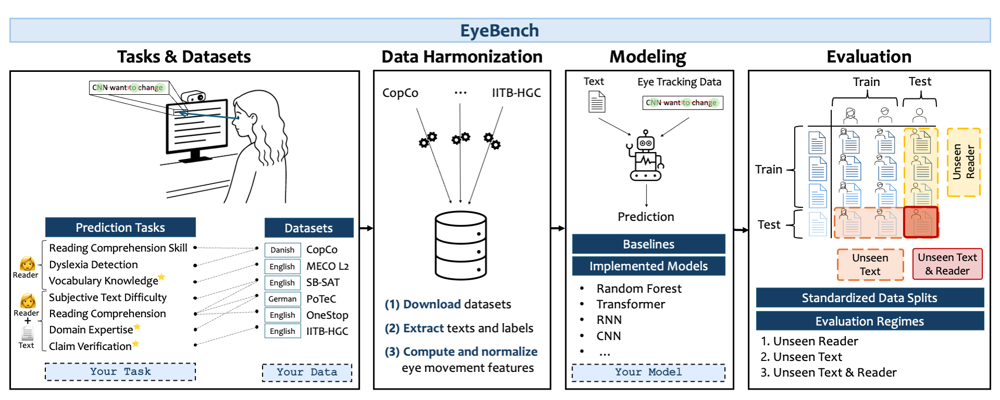

EyeBench: Predictive Modeling from Eye Movements in Reading



Figure 1: Overview of EyeBench v1.0. The benchmark curates multiple datasets for predicting reader properties (👩), and reader–text interactions (👩+📝) from eye movements. * marks prediction tasks newly introduced in EyeBench. The data are preprocessed and standardized into aligned text and gaze sequences, which are then used as input to models trained to predict task-specific targets. The models are systematically evaluated under three generalization regimes — unseen readers, unseen texts, or both. The benchmark supports the evaluation and addition of new models, datasets, and tasks.🧠 Introduction
EyeBench is the first benchmark designed to evaluate machine learning models that decode cognitive and linguistic information from eye movements during reading.
It provides a standardized, extensible framework for predictive modeling from eye tracking data, aiming to bridge cognitive science and multimodal AI.
EyeBench curates multiple publicly available datasets and tasks, covering both reader properties and reader–text interactions, and includes baselines, state-of-the-art models, and evaluation protocols that ensure reproducibility and comparability across studies.
Progress on EyeBench is expected to advance both scientific understanding of human language processing and practical applications such as adaptive educational systems and cognitive-aware user interfaces.
Official repository: https://github.com/EyeBench/eyebench
📚 Tasks and Datasets
EyeBench v1.0 includes seven prediction tasks spanning six harmonized datasets.
Each task is formulated as a single-trial prediction problem from a reader’s eye movements while reading a passage (and optionally an auxiliary text, such as a question or claim).
Reader Properties (👤)
| Task | Dataset | Type | Target |
|---|---|---|---|
| Reading Comprehension Skill | CopCo | Regression | Continuous comprehension score (1–10) |
| Vocabulary Knowledge | MECO L2 | Regression | LexTALE vocabulary test score (0–100) |
| Dyslexia Detection | CopCo | Classification | Clinically diagnosed dyslexia (yes/no) |
Reader–Text Interactions (👤 + 📖)
| Task | Dataset(s) | Type | Target |
|---|---|---|---|
| Reading Comprehension | OneStop, SB-SAT, PoTeC | Classification | Correct answer to a comprehension question |
| Subjective Text Difficulty | SB-SAT | Regression | Perceived difficulty rating (Likert) |
| Domain Expertise | PoTeC | Classification | High vs low domain expertise |
| Claim Verification | IITB-HGC | Classification | Correct claim verification judgment |
Datasets Overview
| Dataset | Language | Group | #Participants | #Words | #Fixations | Tasks |
|---|---|---|---|---|---|---|
| OneStop (Ordinary Reading) | English | L1 | 180 | 19 427 | 1.1 M | Reading Comprehension |
| SB-SAT | English | L1/L2 | 95 | 2 622 | 263 k | Reading Comprehension, Subjective Text Difficulty |
| PoTeC | German | L1 | 75 | 1 895 | 404 k | Reading Comprehension, Domain Expertise |
| MECO L2 | English | L2 | 1 098 | 1 646 | 2.4 M | Vocabulary Knowledge |
| CopCo | Danish | L1/L2/L1-Dyslexia | 57 | 32 140 | 398 k | Reading Comprehension Skill, Dyslexia Detection |
| IITB-HGC | English | L1/L2 | 5 | 53 528 | 164 k | Claim Verification |
🧩 Implemented Models and Baselines
EyeBench provides 12 implemented models and 6 baselines, unified under a shared training and evaluation framework.
Neural Models
- AhnCNN – CNN over fixation sequences (coordinates, durations, pupil size)
- AhnRNN – RNN variant of AhnCNN
- BEyeLSTM – LSTM combining sequential fixations and global gaze statistics
- PLM-AS – LSTM processing fixation-ordered word embeddings
- PLM-AS-RM – RNN integrating fixation-ordered embeddings with reading measures
- RoBERTEye-W – Transformer integrating word embeddings and word-level gaze features
- RoBERTEye-F – Fixation-level variant of RoBERTEye-W
- MAG-Eye – Multimodal Adaptation Gate injecting gaze into transformer layers
- PostFusion-Eye – Cross-attention fusion of RoBERTa embeddings and CNN fixation features
Traditional ML Models
- Logistic / Linear Regression
- Support Vector Machine (SVM / SVR)
- Random Forest (Classifier / Regressor)
Baselines
- Random and Majority Class (classification)
- Mean and Median (regression)
- Reading Speed
- Text-Only RoBERTa (no gaze input)
🧮 Evaluation Protocol
EyeBench evaluates models under three complementary generalization regimes:
| Regime | Description | Typical Use Case |
|---|---|---|
| Unseen Reader | Texts seen, readers unseen | New readers, known materials |
| Unseen Text | Readers seen, texts unseen | Personalized reading of new content |
| Unseen Reader & Text | Both unseen | Fully general setting |
Metrics
- Classification: AUROC, Balanced Accuracy
- Regression: RMSE, MAE, R²
- Aggregate: Average Normalized Score and Mean Rank across all task–dataset pairs.
⚙️ Getting Started
1. Clone and Install
git clone https://github.com/EyeBench/eyebench.git
cd eyebench
mamba env create -f environment.yml
conda activate eyebench
2. Download and Preprocess Data
bash src/data/preprocessing/get_data.sh
This script downloads, harmonizes, and creates standardized folds for all datasets under data/processed/.
3. Log into Weights & Biases (WandB)
wandb login
🚀 Usage
Train a Model
python src/run/single_run/train.py +trainer=TrainerDL +model=RoBERTEyeW +data=OneStop_TRC
Run a Hyperparameter Sweep
bash src/run/multi_run/sweep_wrapper.sh --data_tasks CopCo_TYP --folds 0,1,2,3 --cuda 0,1
Test a Model
python src/run/single_run/test_dl.py +model=RoBERTEyeW +data=OneStop_TRC
Results are stored under:
results/raw/{data_model_trainer_task}/fold_index={i}/trial_level_test_results.csv
results/eyebench_benchmark_results/{metric}.csv
🧠 Adding a New Model
- Create a file under
src/models/YourModel.pyinheriting fromBaseModel. Implementforward()andshared_step()methods. -
Register it in:
src/configs/enums.py→ModelNamessrc/configs/model_args.py→ model config classsrc/configs/config.py→ModelMapping
-
Define its default parameters and search space in
src/run/multi_run/search_spaces.py. - Verify integration:
bash run_commands/utils/model_checker.sh
📊 Adding a New Dataset
- Store raw or preprocessed data in
data/YOUR_DATASET/. - Define its loading logic in
src/data/datasets/YOUR_DATASET.py(inherits fromETDataset). - Add preprocessing logic under
src/data/preprocessing/dataset_preprocessing/YOUR_DATASET.py. - Register the dataset in
src/configs/data.pyandsrc/configs/constants.py. - Add a corresponding task configuration class if it supports multiple tasks.
Datasets must comply with EyeBench’s selection criteria:
- Passage-level texts
- ≥ 500 Hz sampling rate
- Publicly available raw or fixation-level data
- Released texts and gaze–text alignment
📘 Documentation
To build the local documentation site:
pip install mkdocs mkdocs-material 'mkdocstrings[python]' mkdocs-gen-files mkdocs-literate-nav
mkdocs serve
📄 Citation
If you use EyeBench in your research, please cite:
Omer Shubi, David R. Reich, Keren Gruteke Klein, Yuval Angel, Paul Prasse, Lena Jäger, Yevgeni Berzak. EyeBench: Predictive Modeling from Eye Movements in Reading. NeurIPS 2025.
@inproceedings{shubi2025eyebench,
title={EyeBench: Predictive Modeling from Eye Movements in Reading},
author={Omer Shubi and David R. Reich and Keren Gruteke Klein and Yuval Angel and Paul Prasse and Lena Jäger and Yevgeni Berzak},
booktitle={Advances in Neural Information Processing Systems},
year={2025}
}
🤝 Acknowledgments
EyeBench development is supported by:
- COST Action MultiplEYE (CA21131)
- Swiss National Science Foundation (EyeNLG, IZCOZ0 _220330)
- Israel Science Foundation (grant 1499/22)
🧩 License
All datasets included in EyeBench follow their respective original licenses. Code released under the MIT License.